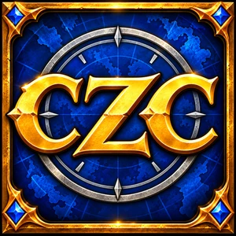

Cozy Zone Compendium
Your story through Azeroth.

Cozy Zone Collector grew into a field journal of your whole adventure, built for World of Warcraft: Forever. It still shows every zone's completion and exactly what's left to collect, and now it also keeps the story you've lived: a Main Story Quest told in seven acts, plus Race and Class Questlines, with every chapter appearing only once you discover it, so nothing is spoiled.
A Bestiary studies each creature you fight, from Observer to Master Hunter, opening its habitat, habits and loot as you go, with trophies and a Field Guide for every zone. Tabs for People, Gear with a dressing-room preview, Gathering and the history of Azeroth fill out the book, all in a hand-painted look with over 100 original banners, crests and act cards.


Click any picture to expand it.